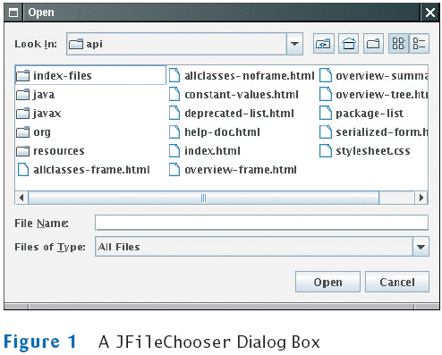
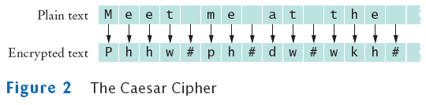
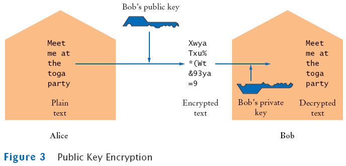
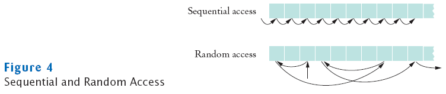

Chapter 16
Streams
Chapter Goals
- To be able to read and write text files
- To become familiar with the concepts of text and binary formats
- To learn about encryption
- To understand when to use sequential and random file access
- To be able to read and write objects using serialization
Reading Text Files
Writing Text Files
- To write to a file, construct a PrintWriter object
PrintWriter out = new PrintWriter("output.txt");
- If file already exists, it is emptied before the new data are written into it
- If file doesn't exist, an empty file is created
- Use print and println to write into a PrintWriter:
out.println(29.95);
out.println(new Rectangle(5, 10, 15, 25));
out.println("Hello, World!");
- You must close a file when you are done processing it:
out.close();
Otherwise, not all of the output may be written to the disk file
A Sample Program
- Reads all lines of a file and sends them to the output file, preceded by line numbers
- Sample input file:
Mary had a little lamb
Whose fleece was white as snow.
And everywhere that Mary went,
The lamb was sure to go!
- Program produces the output file:
/* 1 */ Mary had a little lamb
/* 2 */ Whose fleece was white as snow.
/* 3 */ And everywhere that Mary went,
/* 4 */ The lamb was sure to go!
- Program can be used for numbering Java source files
File LineNumberer.java
Self Check
- What happens when you supply the same name for the input and output files to the LineNumberer program?
- What happens when you supply the name of a nonexistent input file to the LineNumberer program?
Answers
- When the PrintWriter object is created, the output file is emptied. Sadly, that is
the same file as the input file. The input file is now empty and the while loop
exits immediately.
- The program catches a FileNotFoundException, prints an error message, and
terminates.
File Dialog Boxes

JFileChooser chooser = new JFileChooser();
FileReader in = null;
if (chooser.showOpenDialog(null) == JFileChooser.APPROVE_OPTION)
{
File selectedFile = chooser.getSelectedFile();
reader = new FileReader(selectedFile);
. . .
}
Text and Binary Formats
- Two ways to store data:
- Text format
- Binary format
Text Format
Binary Format
Reading a Single Character from a File in Text Format
Reading a Single Character from a File in Binary Format
Text and Binary Format
- Use write method to write a single character or byte
- read and write are the only input and output methods provided by the file input and output classes
- Java stream package principle: each class should have a very focused responsibility
- Job of FileInputStream: interact with files and get bytes
- To read numbers, strings, or other objects, combine class with other classes
Self Check
- Suppose you need to read an image file that contains color values for each pixel
in the image. Will you use a Reader or an InputStream?
- Why do the read methods of the Reader and InputStream classes return an int
and not a char or byte?
Answers
- Image data is stored in a binary format–try loading an image file into a text
editor, and you won't see much text. Therefore, you should use an InputStream.
- They return a special value of -1 to indicate that no more input is available. If
the return type had been char or byte, no special value would have been available
that is distinguished from a legal data value.
An Encryption Program
- File encryption
- To scramble it so that it is readable only to those who know the encryption method and secret keyword
- To use Caesar cipher
- Choose an encryption key–a number between 1 and 25
- Example: If the key is 3, replace A with D, B with E, . . .

- To decrypt, use the negative of the encryption key
To Encrypt Binary Data
int next = in.read();
if (next == -1)
done = true;
else
{
byte b = (byte) next; //call the method to encrypt the byte
byte c = encrypt(b);
out.write(c);
}
File Encryptor.java
File EncryptorTester.java
Self Check
- Decrypt the following message: Khoor/#Zruog$.
- Can you use this program to encrypt a binary file, for example, an image file?
Answers
- It is "Hello, World!", encrypted with a key of 3.
- Yes–the program uses streams and encrypts each byte.
Public Key Encryption

Random Access vs. Sequential Access
- Sequential access
- A file is processed a byte at a time
- It can be inefficient
- Random access
- Allows access at arbitrary locations in the file
- Only disk files support random access
- System.in and System.out do not
- Each disk file has a special file pointer position
- You can read or write at the position where the pointer is

RandomAccessFile
- You can open a file either for
- Reading only ("r")
- Reading and writing ("rw")
RandomAccessFile f = new RandomAcessFile("bank.dat","rw");
- To move the file pointer to a specific byte
f.seek(n);
- To get the current position of the file pointer.
long n = f.getFilePointer(); // of type "long" because files can be very large
- To find the number of bytes in a file
long fileLength = f.length();
A Sample Program
- Use a random access file to store a set of bank accounts
- Program lets you pick an account and deposit money into it
- To manipulate a data set in a file, pay special attention to data formatting
- Suppose we store the data as text
Say account 1001 has a balance of $900, and account 1015 has a balance of 0
We want to deposit $100 into account 1001
If we now simply write out the new value, the result is
A Sample Program
- Better way to manipulate a data set in a file:
- Give each value a fixed size that is sufficiently large
- Every record has the same size
- Easy to skip quickly to a given record
- To store numbers, it is easier to store them in binary format
A Sample Program
- RandomAccessFile class stores binary data
- readInt and writeInt read/write integers as four-byte quantities
- readDouble and writeDouble use 8 bytes
double x = f.readDouble();
f.writeDouble(x);
- To find out how many bank accounts are in the file
public int size() throws IOException
{
return (int) (file.length() / RECORD_SIZE); // RECORD_SIZE is 12 bytes:
// 4 bytes for the account number and
// 8 bytes for the balance
}
A Sample Program
A Sample Program
File BankDataTester.java
File BankData.java
Output
Account number: 1001
Amount to deposit: 100
adding new account
Done? (Y/N) N
Account number: 1018
Amount to deposit: 200
adding new account
Done? (Y/N) N
Account number: 1001
Amount to deposit: 1000
new balance=1100.0
Done? (Y/N) Y
Self Check
- Why doesn't System.out support random access?
- What is the advantage of the binary format for storing numbers? What is the disadvantage?
Answers
- Suppose you print something, and then you call seek(0), and print again to the
same location. It would be difficult to reflect that behavior in the console window.
- Advantage: The numbers use a fixed amount of storage space, making it
possible to change their values without affecting surrounding data.
Disadvantage: You cannot read a binary file with a text editor.
Object Streams
- ObjectOutputStream class can save a entire objects to disk
- ObjectInputStream class can read objects back in from disk
- Objects are saved in binary format; hence, you use streams
Writing a BankAccount Object to a File
Reading a BankAccount Object from a File
Write and Read an ArrayList to a File
Serializable
File SerialTester.java
Output
First Program Run
1001:20100.0
1015:10000.0
Second Program Run
1001:20200.0
1015:10000.0
Self Check
- Why is it easier to save an object with an ObjectOutputStream than a
RandomAccessFile?
- What do you have to do to the Coin class so that its objects can be saved in an
ObjectOutputStream?
Answers
- You can save the entire object with a single writeObject call. With a
RandomAccessFile, you have to save each field separately.
- Add implements Serializable to the class definition.